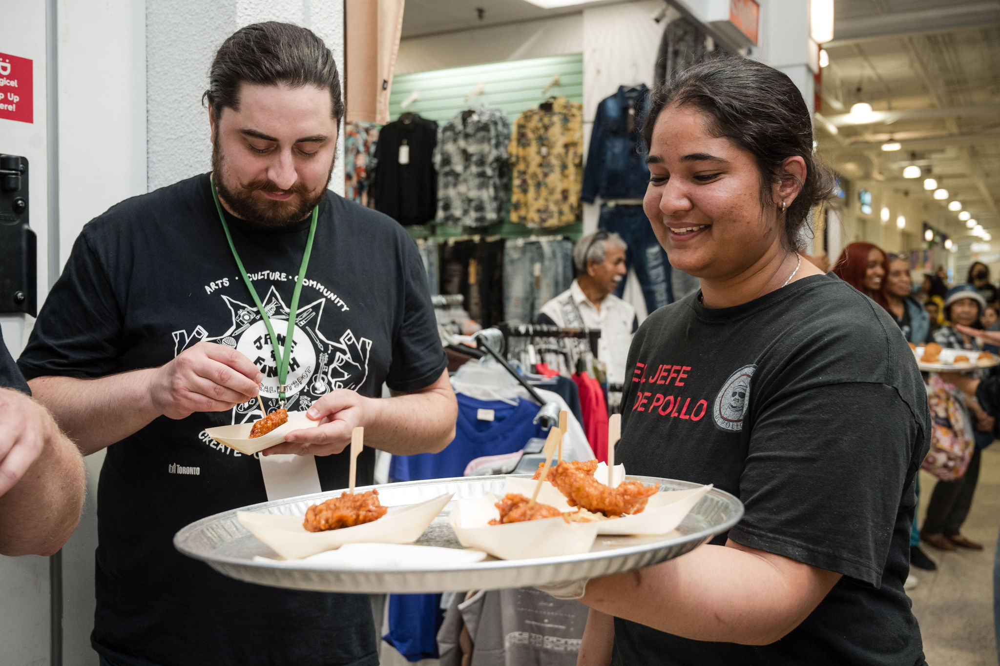
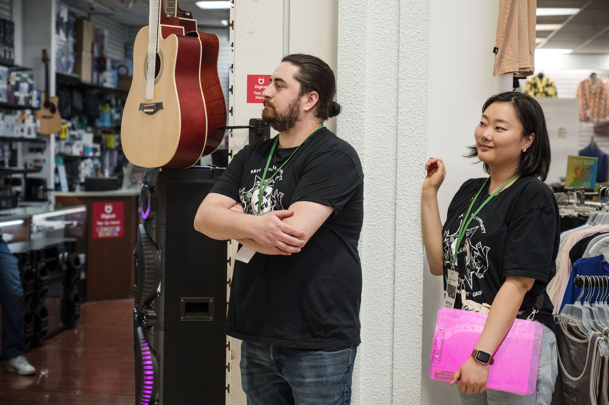

Home
Volunteer Work
Arts & Culture
Cultural Hotspot Jane & Finch Event

As a longtime lover and enjoyer of the arts I often find myself volunteering for programs with Toronto Art’s and Culture. You may wonder how volunteering these programs has anything to do with working as a user or market researcher and at first glance you would probably be right. The thing is, one of the most important parts of user centric research is working with and trying to understand people from all sorts of different walks of life across the various projects you may participate in. Having the opportunity to engage with people from such an incredibly diverse city like Toronto is actually a great way to build up your people skills and get exposure to so many different, unique, and valuable perspectives.

One of the biggest goals with user research is to try and answer the big “why” questions you might have about your users. I firmly believe that to do this you need more than just a textbook understanding of how to distill people into user groups and target them with various methodologies, (these are of course all very important and remain the bread and butter of the UXR’s toolkit), however I think there is merit to gaining real life experience, learning to think on your feet and getting exposure to a huge variety of different personality types and people in settings that are outside of our usual environments like focus groups, interviews, and usability studies etc. I think it is important to learn how to listen to people when there is nothing necessarily at stake, when there is no recorded interview or focus group or any of the other constraints and confines packaged with trying to improve a service or product.
I suppose what I am trying to say here is that I believe user research is not just about learning methodologies and processes, but it is also about engaging with and listening to people. I think volunteering is a great way to build your interpersonal skills, adapt to different personalities and respond naturally to people so that you can be a more open-minded and thoughtful researcher.